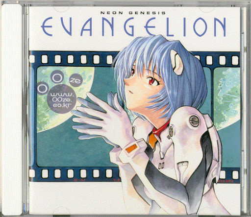
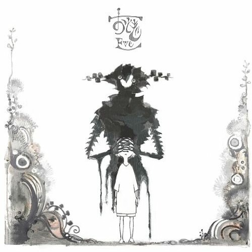

HACHI - DOUNT HOLE
하치가 돌아왔다. 하치 (a.k.a.요네즈 켄시)가 11년만에 도넛홀을 리메이크로 다시 애니메이션을 제작해 이번 달에 투고되었다.
11년만에 돌아온 도넛홀은 하치가 2013년 10월 28일에 니코니코 동화와 유튜브에 토고한 GUMI의 VOCALOID 오리지널 곡이다.
캐릭터의 의상 디자인은 하치가 한 걸로 알려져 있으며 좋은 느낌을 준다.. 추천!

Thanatos - Evangelion OST - Shirō Sagisu
에반게리온의 ost이며 평소에 자주 듣는 ost다. 생각이 많거나 사람 목소리가 나오는 음악이 질릴 때 자주 듣는 노래다.
지강주가 고3때부터 많이 들었던 노래이며 에반게리온 ost들 중에서 제일 좋아하는 트랙이다.
새벽에 간접등을 키고 듣고 있으면 세상에 나 혼자 남겨진... 이카리 신지가 될 수 있다.

Eve - outsider
일본의 유명 우타이테 및 가수 이브의 곡이다. 평소 이브의 노래를 자주 듣고 좋아하지만 요즘에 빠진 노래는 아웃사이더라는 곡이다.
빠른 템포로 진행이 되면서 내적 흥을 유발시킨다. 지강주는 이번 년도에 이브 내한 라이브도 다녀왔다.
즐거웠던 그 시절을 생각하면서... 노래를 즐겨보자..